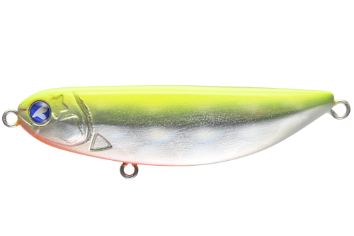
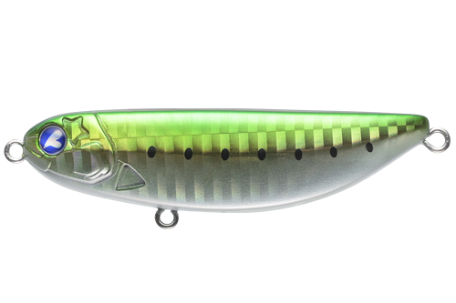
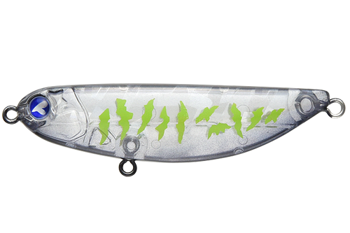
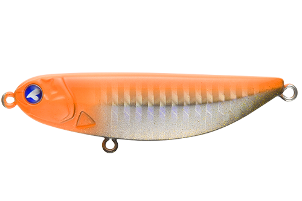

シャルダス20
（Shalldus 20）
シャルダス20はBlueBlue（ブルーブルー）のブレードベイトです。
これまでディープ向けが中心だったブレード系ルアーの「食わせる力」を、シャローエリアに持ち込んだモデル。引けば引くほど浮き上がるボディで、水面直下をデッドスローで引けます。夜間にも使える、表層ゆっくり系のブレードベイトです。

画像出典:BlueBlue公式HP
スペック
- メーカー
- BlueBlue（ブルーブルー）
- タイプ
- ブレードベイト（シンキング）
- 全長
- 75mm
- 自重
- 18g
- レンジ
- 30cm
- フック
- #6×2
- ブレード
- No.3
- ターゲット
- シーバス
- 価格
- 2,180円（税別）
▼今すぐチェック

シャルダス20の特徴
ブレードの強い波動と小さいシルエットを、表層のデッドスローで
-
表層をデッドスローで引ける
球面の背中で、引けば引くほど浮き上がるボディ構造。デッドスローでも水面直下まで上がってくるので、表層をゆっくり見せられます。
-
遠浅のシャローでも届く飛距離
18gの重さで、遠浅のシャローでも十分な飛距離を確保。ウェーディングの釣りでも届かせたい場所まで投げられます。
-
ブレードの波動で食い渋りに効く
小さいシルエットから強い波動が出るのがブレードの魅力。スレた魚や食い渋る魚にも口を使わせやすいルアーです。
シャルダス20の使い方
基本はデッドスローのただ巻き。着水後すぐに巻き始めると、表層をブレードの波動を出しながらゆっくり泳ぎます。
表層で反応がないときは、一度沈めてから中層や底付近をゆっくり引くことも可能。巻き速度とカウントダウンでレンジを調整しましょう。
シャルダス20の得意な状況
遠浅の干潟や河口、港湾のシャローエリア。夜でも使えるので、ナイトゲームで表層を意識した魚を、ミノーやシンペンとは違う波動で誘いたいときに向いています。
ワンポイント
同じシリーズには小型の14（60mm・14g）と重い35（76.5mm・35g）もあります。ベイトが小さいときは14、遠投が必要なときは35と使い分けましょう。
シャルダスシリーズの使い分け
| モデル | 全長／自重 | 得意な場面 |
|---|---|---|
| シャルダス14 | 60mm／14g | レンジ50cm。ベイトが小さいときや近距離に |
| シャルダス20 | 75mm／18g | レンジ30cm。表層をデッドスローで引く基準モデル（本記事のモデル） |
| シャルダス35 | 76.5mm／35g | レンジ10〜30cm。遠投が必要な場所や、流れの強い場所に |
シャルダスはどのサイズも表層を引けるシャローブレード。ベイトの大きさと届かせたい距離で選びましょう。
人気カラー
公式ラインナップから4色を紹介します（カラー名は公式の表記のまま）。

#04 チャートバックデカレンズホロチャートの背中と大きなレンズホロ。濁りやローライトでアピールしたいときに。

#12 ラフブルーブルー系のナチュラルカラー。澄み潮や日中に。

#20 クリアブラッククリアとブラックのシルエット系。夜の常夜灯まわりでシルエットを出したいときに。

#23 エクストリームキャロットオレンジ系の目立つカラー。濁りの強いときや、反応を見たいときのアピール役に。
画像出典:BlueBlue公式HP
シャルダス20に似ているルアー
-
 ナレージ65
ブルーブルー
詳細はこちら＞
ナレージ65
ブルーブルー
詳細はこちら＞
全長65mm・自重17gのバイブレーション。同じBlueBlueで、ブレードではなくボディの波動で探りたいときに。
-
 ツクモ
ジャッカル
詳細はこちら＞
ツクモ
ジャッカル
詳細はこちら＞
水深1m前後の激浅エリアに対応したシャローバイブレーション。同じくシャローを攻めたいときに。
-
 カンナ15
ポップシークルー
詳細はこちら＞
カンナ15
ポップシークルー
詳細はこちら＞
全長58mm・自重15gのバイブレーション。もう少し小さいシルエットで見せたいときに。